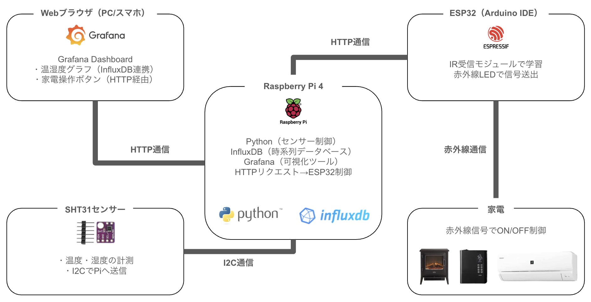

スマートホーム開発
電子暖炉と加湿器の自動制御
温湿度を計測し、可視化・自動制御するRaspberry Pi × ESP32ベースのスマートホームシステム。
単なる遠隔操作ではなく、部屋の環境データを元に最適な状態へ調整する予見的な制御ロジックに挑戦しました。
- 温湿度センサー（SHT31）でリアルタイムデータを取得
- InfluxDB＋Grafanaで可視化
- ESP32＋赤外線モジュールで家電制御
- HTTP通信でRaspberry Piと連携
Grafanaダッシュボード

使用技術: Raspberry Pi / ESP32 / InfluxDB / Grafana / Python / Arduino
デモ動画
Purpose｜プロジェクト概要
暮らしを“計測”し、“心地よく”変える。
温湿度を定量化し、データから部屋の快適度を判断。
体感と実測のズレを減らすことで、「空間の質」を再設計することを目指しました。
Architecture｜システム構成
- SHT31： 温湿度センサー（I2C通信）
- Raspberry Pi 4： Pythonスクリプトで制御・DB格納
- InfluxDB： 温湿度データを時系列で保存
- Grafana： データを可視化・操作UIを提供
- ESP32： HTTP経由で受信した信号を赤外線出力
- 家電： 電子暖炉・加湿器を制御
Implementation｜実装内容
センサー計測
Pythonの smbus2 でSHT31から値を取得し、influxdb-client 経由でInfluxDBに記録。
cronジョブで定期実行し、常時データを取得。
可視化
Grafanaでリアルタイムグラフ・数値表示・操作パネルを統合。
HTML＋CSSのみでシンプルでわかりやすいUIを実装。
家電制御
Arduino IDEでESP32を開発し、HTTP経由で受け取った指令を赤外線に変換。
家電リモコン信号をIR受信→送信モジュールで再現。
設定した温湿度の閾値で自動でON/OFF制御。
Design & Refinement｜特徴・工夫
- 温湿度の「見える化」と「操作」を1つのUIに集約
- ローカル完結構成により、プライバシー性と応答速度を両立
- スマートディスプレイのようなデザイン性を意識（白・黒・エメラルド）
- 温湿度の閾値で家電を自動制御
Outcomes & Learnings｜成果と学び
- IoTシステムの全工程（計測→保存→可視化→制御）を自力で構築
- ESP32・Raspberry Pi・InfluxDB・Grafanaの総合理解
Next Steps｜今後の展開
- HTTP制御からMQTTへ拡張（双方向通信対応）
- Home Assistant（Alexa） / ESPHomeとの統合
- 温湿度トレンドから「快適度スコア」を算出・自動最適化
Media｜添付メディア
- システム構成図：
system_diagram.png - データフロー図：
data_flow.png - Grafanaダッシュボード・動画デモ：
smarthome_demo.mp4